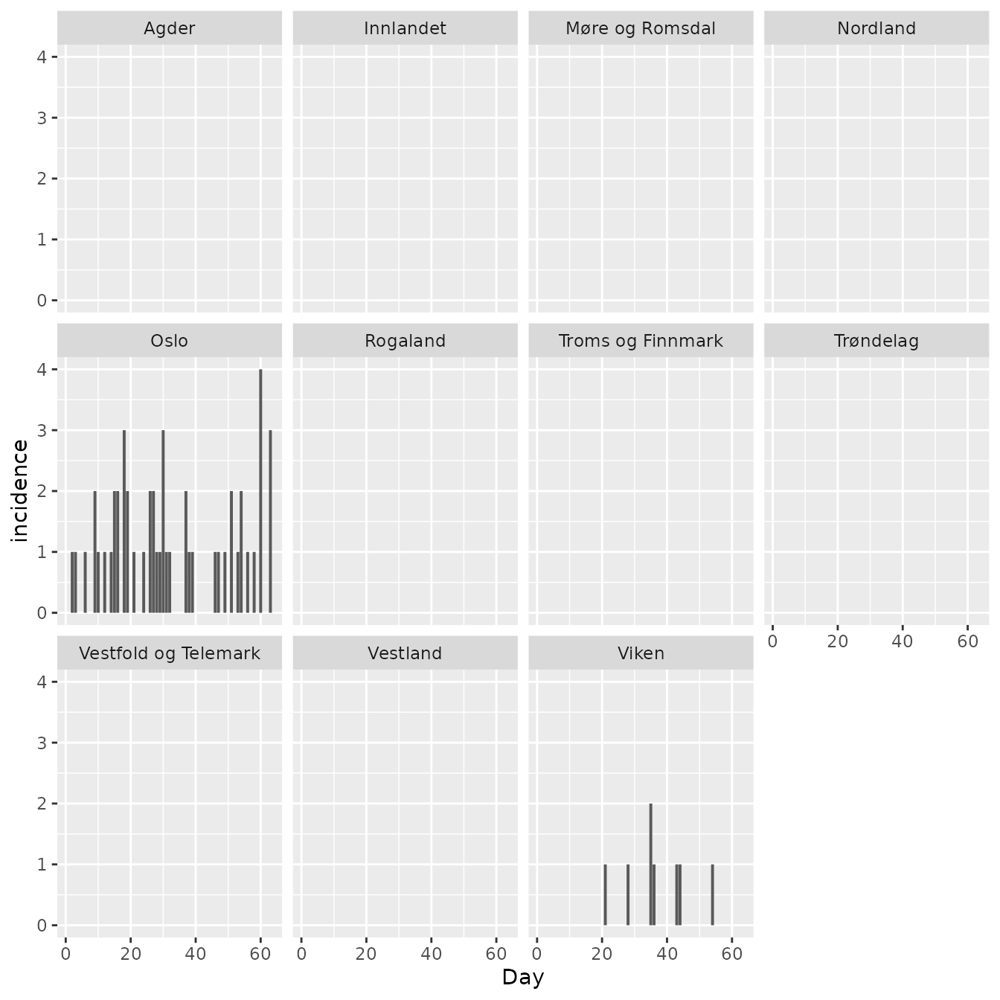

Commuter Model Intro
Richard White
2023-01-24
Source:../vignettes/commuter_model.Rmd
commuter_model.RmdBackground
This model is a stochastic SEIIaR (susceptible, exposed, infectious, infectious asymptomatic, recovered) metapopulation model. Each location has a local infection system, while the locations are connected by people who commute each day. The model differentiates between day and night. During the day you can infect/be infected in the location where you work, while during the night you can infect/be infected in the location where you live. It is the same commuters who travel back and forth each day. At the start of a day, all commuters are sent to their work location, where they mix for 12 hours. The commuters are then sent to their respective home locations, where they mix for 12 hours. The model is loosely based upon a published model by Engebretsen (2019).
Data required
seiiar is a dataset that contains the following variables for the entire population you want to model:
-
location_codea code for each location -
Sthe starting value of susceptible people -
Ethe starting value of exposed people -
Ithe starting value of infectious and symptomatic people -
Iathe starting value of infectious and asymptomatic people -
Rthe starting value of recovered people
# no one in Norway is infected, and everyone is susceptible
spread::nor_seiiar_noinfected_2017_b2020
#> location_code S E I Ia R
#> 1: municip_nor0301 666759 0 0 0 0
#> 2: municip_nor1101 14899 0 0 0 0
#> 3: municip_nor1103 140856 0 0 0 0
#> 4: municip_nor1106 37166 0 0 0 0
#> 5: municip_nor1108 76742 0 0 0 0
#> ---
#> 352: municip_nor5440 991 0 0 0 0
#> 353: municip_nor5441 2911 0 0 0 0
#> 354: municip_nor5442 951 0 0 0 0
#> 355: municip_nor5443 2267 0 0 0 0
#> 356: municip_nor5444 10199 0 0 0 0
# 10 people in Oslo are infected, and everyone is susceptible
spread::nor_seiiar_oslo_2017_b2020
#> location_code S E I Ia R
#> 1: municip_nor0301 666749 0 10 0 0
#> 2: municip_nor1101 14899 0 0 0 0
#> 3: municip_nor1103 140856 0 0 0 0
#> 4: municip_nor1106 37166 0 0 0 0
#> 5: municip_nor1108 76742 0 0 0 0
#> ---
#> 352: municip_nor5440 991 0 0 0 0
#> 353: municip_nor5441 2911 0 0 0 0
#> 354: municip_nor5442 951 0 0 0 0
#> 355: municip_nor5443 2267 0 0 0 0
#> 356: municip_nor5444 10199 0 0 0 0
# no one in Norway is infected, and childhood vaccination data is used to
# estimate the number of "recovered" (i.e. non-susceptible) people for measles
spread::nor_seiiar_measles_noinfected_2017_b2020
#> location_code S E I Ia R
#> 1: municip_nor0301 59775 0 0 0 606984
#> 2: municip_nor1101 1027 0 0 0 13872
#> 3: municip_nor1103 8868 0 0 0 131988
#> 4: municip_nor1106 1557 0 0 0 35609
#> 5: municip_nor1108 3058 0 0 0 73684
#> ---
#> 352: municip_nor5440 56 0 0 0 935
#> 353: municip_nor5441 513 0 0 0 2398
#> 354: municip_nor5442 72 0 0 0 879
#> 355: municip_nor5443 150 0 0 0 2117
#> 356: municip_nor5444 1149 0 0 0 9050
# 10 people in Oslo is infected, and childhood vaccination data is used to
# estimate the number of "recovered" (i.e. non-susceptible) people for measles
spread::nor_seiiar_measles_oslo_2017_b2020
#> location_code S E I Ia R
#> 1: municip_nor0301 59765 0 10 0 606984
#> 2: municip_nor1101 1027 0 0 0 13872
#> 3: municip_nor1103 8868 0 0 0 131988
#> 4: municip_nor1106 1557 0 0 0 35609
#> 5: municip_nor1108 3058 0 0 0 73684
#> ---
#> 352: municip_nor5440 56 0 0 0 935
#> 353: municip_nor5441 513 0 0 0 2398
#> 354: municip_nor5442 72 0 0 0 879
#> 355: municip_nor5443 150 0 0 0 2117
#> 356: municip_nor5444 1149 0 0 0 9050
# we can take a closer look at Oslo
spread::nor_seiiar_measles_oslo_2017_b2020[location_code=="municip_nor0301"]
#> location_code S E I Ia R
#> 1: municip_nor0301 59765 0 10 0 606984commuters is a dataset that contains the following variables:
-
fromlocation code for the location where the people live -
tolocation code for the location where the people work -
nthe number of people this applies to
# we provide the number of municipal commuters in Norway in 2017
spread::nor_commuters_2017_b2020
#> from to n
#> 1: municip_nor0301 municip_nor1101 71
#> 2: municip_nor0301 municip_nor1103 1423
#> 3: municip_nor0301 municip_nor1106 332
#> 4: municip_nor0301 municip_nor1108 652
#> 5: municip_nor0301 municip_nor1111 5
#> ---
#> 23894: municip_nor5444 municip_nor5439 3
#> 23895: municip_nor5444 municip_nor5440 1
#> 23896: municip_nor5444 municip_nor5441 33
#> 23897: municip_nor5444 municip_nor5442 12
#> 23898: municip_nor5444 municip_nor5443 8r0 is the basic reproductive number.
latent_period is the average number of days from when a person is exposed until they are infectious.
asymptomatic_prob is the probability that an infectious person is asymptomatic.
asymptomatic_relative_infectiousness is the relative infectiousness of an asymptomatic infectious person when compared to a symptomatic infectious person. This value is between 0 and 1.
days_simulation the number of days you want to simulate.
N this is the number of simulations that will be run and then the results will be averaged. This should generally be set to 1, unless you are performing model fitting.
Example
We simulate one measles outbreak using the datasets spread::nor_seiiar_measles_oslo_2017_b2020 and spread::nor_commuters_2017_b2020:
set.seed(4)
d <- spread::commuter(
seiiar=spread::nor_seiiar_measles_oslo_2017_b2020,
commuters=spread::nor_commuters_2017_b2020,
r0=14,
latent_period = 8,
infectious_period = 5,
asymptomatic_prob=0,
asymptomatic_relative_infectiousness=0,
days_simulation=7*9,
N=1
)
#> Starting to add edges, printing every 1000 edge
#> 1000 2000 3000 4000 5000 6000 7000 8000 9000 10000 11000 12000 13000 14000 15000 16000 17000 18000 19000 20000 21000 22000 23000 Found 23898 edges
#> Running 1 simulations of 63 days
#>
#>
#> Finished all simulationsInspecting the data from Oslo:
d[location_code=="municip_nor0301"]
#> sim_id location_code week day is_6pm S E I Ia R incidence
#> 1: 1 municip_nor0301 1 1 TRUE 59765 2 9 0 606985 0
#> 2: 1 municip_nor0301 1 2 TRUE 59762 4 7 0 606988 1
#> 3: 1 municip_nor0301 1 3 TRUE 59761 4 5 0 606991 1
#> 4: 1 municip_nor0301 1 4 TRUE 59760 5 4 0 606992 0
#> 5: 1 municip_nor0301 1 5 TRUE 59760 5 2 0 606994 0
#> 6: 1 municip_nor0301 1 6 TRUE 59759 5 2 0 606995 1
#> 7: 1 municip_nor0301 1 7 TRUE 59757 7 2 0 606995 0
#> 8: 1 municip_nor0301 2 8 TRUE 59756 8 2 0 606995 0
#> 9: 1 municip_nor0301 2 9 TRUE 59756 6 4 0 606995 2
#> 10: 1 municip_nor0301 2 10 TRUE 59755 6 4 0 606996 1
#> 11: 1 municip_nor0301 2 11 TRUE 59755 6 3 0 606997 0
#> 12: 1 municip_nor0301 2 12 TRUE 59755 5 3 0 606998 1
#> 13: 1 municip_nor0301 2 13 TRUE 59753 7 3 0 606998 0
#> 14: 1 municip_nor0301 2 14 TRUE 59753 6 4 0 606998 1
#> 15: 1 municip_nor0301 3 15 TRUE 59753 4 6 0 606998 2
#> 16: 1 municip_nor0301 3 16 TRUE 59750 5 8 0 606998 2
#> 17: 1 municip_nor0301 3 17 TRUE 59747 8 7 0 606999 0
#> 18: 1 municip_nor0301 3 18 TRUE 59746 6 9 0 607000 3
#> 19: 1 municip_nor0301 3 19 TRUE 59744 6 9 0 607002 2
#> 20: 1 municip_nor0301 3 20 TRUE 59744 6 7 0 607004 0
#> 21: 1 municip_nor0301 3 21 TRUE 59744 4 5 0 607008 1
#> 22: 1 municip_nor0301 4 22 TRUE 59743 5 4 0 607009 0
#> 23: 1 municip_nor0301 4 23 TRUE 59742 6 3 0 607010 0
#> 24: 1 municip_nor0301 4 24 TRUE 59740 7 4 0 607010 1
#> 25: 1 municip_nor0301 4 25 TRUE 59740 7 3 0 607011 0
#> 26: 1 municip_nor0301 4 26 TRUE 59739 6 4 0 607012 2
#> 27: 1 municip_nor0301 4 27 TRUE 59739 4 5 0 607013 2
#> 28: 1 municip_nor0301 4 28 TRUE 59738 4 5 0 607014 1
#> 29: 1 municip_nor0301 5 29 TRUE 59737 5 5 0 607014 1
#> 30: 1 municip_nor0301 5 30 TRUE 59735 4 6 0 607016 3
#> 31: 1 municip_nor0301 5 31 TRUE 59733 5 7 0 607016 1
#> 32: 1 municip_nor0301 5 32 TRUE 59733 4 7 0 607017 1
#> 33: 1 municip_nor0301 5 33 TRUE 59733 4 6 0 607018 0
#> 34: 1 municip_nor0301 5 34 TRUE 59732 5 6 0 607018 0
#> 35: 1 municip_nor0301 5 35 TRUE 59732 5 5 0 607019 0
#> 36: 1 municip_nor0301 6 36 TRUE 59730 7 4 0 607020 0
#> 37: 1 municip_nor0301 6 37 TRUE 59730 5 5 0 607021 2
#> 38: 1 municip_nor0301 6 38 TRUE 59728 6 5 0 607022 1
#> 39: 1 municip_nor0301 6 39 TRUE 59728 5 5 0 607023 1
#> 40: 1 municip_nor0301 6 40 TRUE 59726 7 4 0 607024 0
#> 41: 1 municip_nor0301 6 41 TRUE 59726 7 3 0 607025 0
#> 42: 1 municip_nor0301 6 42 TRUE 59726 7 2 0 607026 0
#> 43: 1 municip_nor0301 7 43 TRUE 59725 7 3 0 607026 0
#> 44: 1 municip_nor0301 7 44 TRUE 59723 9 3 0 607026 0
#> 45: 1 municip_nor0301 7 45 TRUE 59722 10 3 0 607026 0
#> 46: 1 municip_nor0301 7 46 TRUE 59722 9 3 0 607027 1
#> 47: 1 municip_nor0301 7 47 TRUE 59721 9 4 0 607027 1
#> 48: 1 municip_nor0301 7 48 TRUE 59721 9 3 0 607028 0
#> 49: 1 municip_nor0301 7 49 TRUE 59719 10 4 0 607028 1
#> 50: 1 municip_nor0301 8 50 TRUE 59718 11 4 0 607028 0
#> 51: 1 municip_nor0301 8 51 TRUE 59718 9 6 0 607028 2
#> 52: 1 municip_nor0301 8 52 TRUE 59717 10 5 0 607029 0
#> 53: 1 municip_nor0301 8 53 TRUE 59717 9 5 0 607030 1
#> 54: 1 municip_nor0301 8 54 TRUE 59716 7 7 0 607031 2
#> 55: 1 municip_nor0301 8 55 TRUE 59715 8 6 0 607032 0
#> 56: 1 municip_nor0301 8 56 TRUE 59713 9 5 0 607034 1
#> 57: 1 municip_nor0301 9 57 TRUE 59712 10 3 0 607036 0
#> 58: 1 municip_nor0301 9 58 TRUE 59711 10 4 0 607036 1
#> 59: 1 municip_nor0301 9 59 TRUE 59708 13 4 0 607036 0
#> 60: 1 municip_nor0301 9 60 TRUE 59707 11 6 0 607037 4
#> 61: 1 municip_nor0301 9 61 TRUE 59706 12 6 0 607037 0
#> 62: 1 municip_nor0301 9 62 TRUE 59704 14 5 0 607038 0
#> 63: 1 municip_nor0301 9 63 TRUE 59702 13 7 0 607039 3
#> sim_id location_code week day is_6pm S E I Ia R incidence
#> pop
#> 1: 666761
#> 2: 666761
#> 3: 666761
#> 4: 666761
#> 5: 666761
#> 6: 666761
#> 7: 666761
#> 8: 666761
#> 9: 666761
#> 10: 666761
#> 11: 666761
#> 12: 666761
#> 13: 666761
#> 14: 666761
#> 15: 666761
#> 16: 666761
#> 17: 666761
#> 18: 666761
#> 19: 666761
#> 20: 666761
#> 21: 666761
#> 22: 666761
#> 23: 666761
#> 24: 666761
#> 25: 666761
#> 26: 666761
#> 27: 666761
#> 28: 666761
#> 29: 666761
#> 30: 666761
#> 31: 666761
#> 32: 666761
#> 33: 666761
#> 34: 666761
#> 35: 666761
#> 36: 666761
#> 37: 666761
#> 38: 666761
#> 39: 666761
#> 40: 666761
#> 41: 666761
#> 42: 666761
#> 43: 666761
#> 44: 666761
#> 45: 666761
#> 46: 666761
#> 47: 666761
#> 48: 666761
#> 49: 666761
#> 50: 666761
#> 51: 666761
#> 52: 666761
#> 53: 666761
#> 54: 666761
#> 55: 666761
#> 56: 666761
#> 57: 666761
#> 58: 666761
#> 59: 666761
#> 60: 666761
#> 61: 666761
#> 62: 666761
#> 63: 666761
#> popWe can merge in information about counties, and create county level data:
d[
csdata::nor_locations_hierarchy_from_to(
from = "municip",
to = "county",
include_to_name = TRUE
),
on = "location_code==from_code",
c(
"county_code",
"county_name"
) := .(
to_code,
to_name
)
]
county <- d[,.(
S=sum(S),
E=sum(E),
I=sum(I),
Ia=sum(Ia),
R=sum(R),
incidence=sum(incidence),
pop=sum(pop)
),
keyby=.(county_code,county_name,week,day,is_6pm)]
county
#> county_code county_name week day is_6pm S E I Ia R
#> 1: county_nor03 Oslo 1 1 TRUE 59765 2 9 0 606985
#> 2: county_nor03 Oslo 1 2 TRUE 59762 4 7 0 606988
#> 3: county_nor03 Oslo 1 3 TRUE 59761 4 5 0 606991
#> 4: county_nor03 Oslo 1 4 TRUE 59760 5 4 0 606992
#> 5: county_nor03 Oslo 1 5 TRUE 59760 5 2 0 606994
#> ---
#> 689: county_nor54 Troms og Finnmark 9 59 TRUE 22636 0 0 0 220397
#> 690: county_nor54 Troms og Finnmark 9 60 TRUE 22636 0 0 0 220397
#> 691: county_nor54 Troms og Finnmark 9 61 TRUE 22636 0 0 0 220397
#> 692: county_nor54 Troms og Finnmark 9 62 TRUE 22636 0 0 0 220397
#> 693: county_nor54 Troms og Finnmark 9 63 TRUE 22636 0 0 0 220397
#> incidence pop
#> 1: 0 666761
#> 2: 1 666761
#> 3: 1 666761
#> 4: 0 666761
#> 5: 0 666761
#> ---
#> 689: 0 243033
#> 690: 0 243033
#> 691: 0 243033
#> 692: 0 243033
#> 693: 0 243033We can produce a daily epicurve for each county:
q <- ggplot(county, aes(x=day, y=incidence))
q <- q + geom_col()
q <- q + facet_wrap(~county_name)
q <- q + scale_x_continuous("Day")
q
And we can produce weekly maps:
w <- county[,.(
incidence_weekly = sum(incidence),
pop = mean(pop)
), keyby=.(county_code, week)]
w[,weekly_incidence_pr10000 := 10000*incidence_weekly/pop]
w[,facet:=glue::glue("Week {week}",week=week)]
pd <- merge(
w,
csmaps::nor_county_map_b2020_default_dt,
by.x="county_code",
by.y="location_code",
allow.cartesian = T)
q <- ggplot(data=pd, mapping=aes( x = long, y = lat, group = group))
q <- q + geom_polygon(aes(fill=weekly_incidence_pr10000))
q <- q + facet_wrap(~facet)
q <- q + theme_void()
q <- q + coord_quickmap()
q